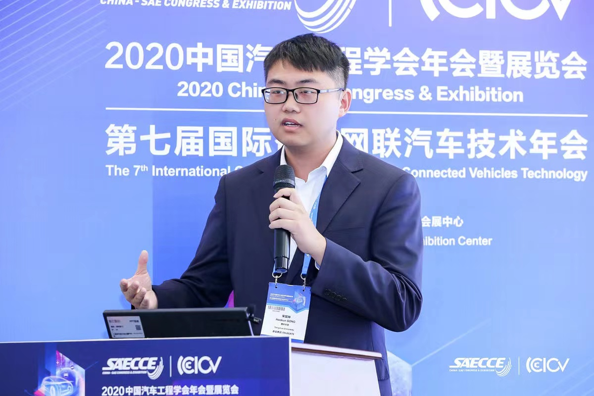

|
Haokun Song
|
 |
Haokun Song
School of vehicle and mobility
Tsinghua University
Email: songhaokun@126.com;songhk19@mails.tsinghua.edu.cn
Tel: 18810960761;13065047089
Adress: Room A223, Lee Shau Kee Science & Technology Building, Tsinghua University, Haidian District, Beijing
|
Education
Publications
-
Song H, Zhao F, Liu Z*. Influences of Single-Lane Automatic Driving Systems on Traffic Efficiency and CO2 Emissions on China’s Motorways[J]. Applied Sciences, 2021, 11(22): 11032. (IF 2.921 JCR Q2) [Link]
-
Liu Z, Song H, Tan H, Hao H, Zhao F*. Evaluation of the Cost of Intelligent Upgrades of Transportation Infrastructure for Intelligent Connected Vehicles[J]. Journal of Advanced Transportation, 2022, 2022. (IF 2.502 JCR Q3) [Link]
-
Zhao F, Song H, Liu Z*. Identification and Analysis of Key Technical Elements and Prospects for Software-Defined Vehicles[J]. SAE Technical Paper, 2022: 01-7002. [Link]
-
Song H, Zhao F, Hao H, Liu Z*. A Research Review on Vehicle Lane Changing Models Considering Intelligent Connected Vehicle and Distracted Driving Behaviours[C]//Proceedings of China SAE Congress 2020: Selected Papers. Springer, Singapore, 2022: 1573-1584. [Link]
-
刘宗巍,宋昊坤,郝瀚,赵福全*.基于4S融合的新一代智能汽车创新发展战略研究[J].中国工程科学,2021,23(03):153-162. (IF 3.710) [Link]
-
刘宗巍,宋昊坤,郝瀚,赵福全*.中国智能网联汽车产业人才需求预测研究[J].科技管理研究,2022,42(05):129-137. (IF 2.673) [Link]
-
宋昊坤,肖睿轩,李瑞敏*.“出行即服务”（MaaS）的发展及商业模式探索. [Link]
Research Interests
|